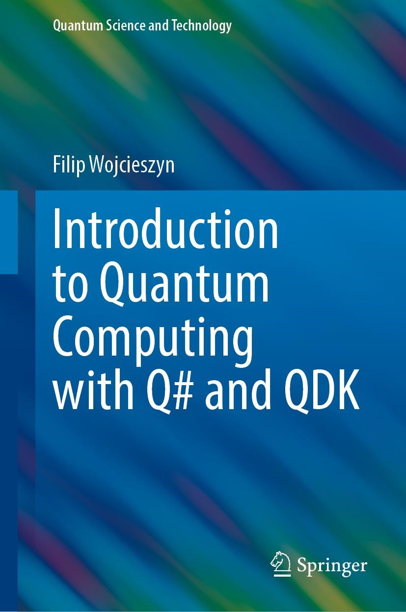
Agenda
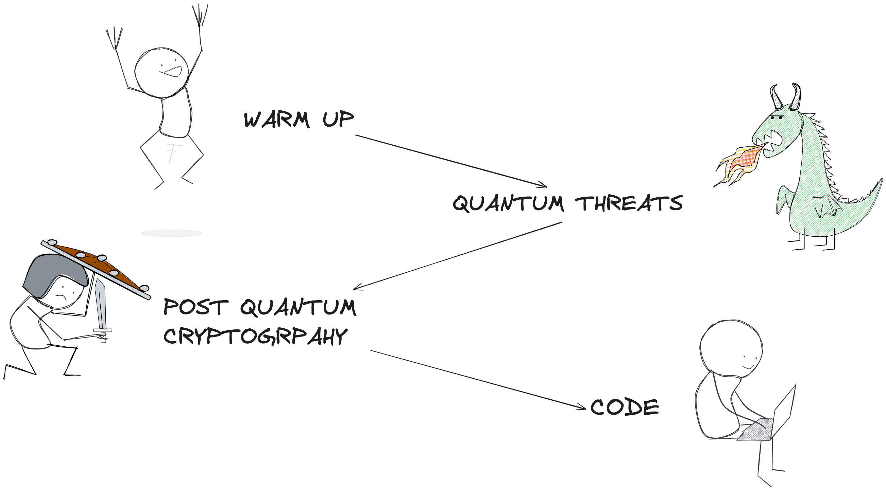
Warm up
Symmetric cryptography
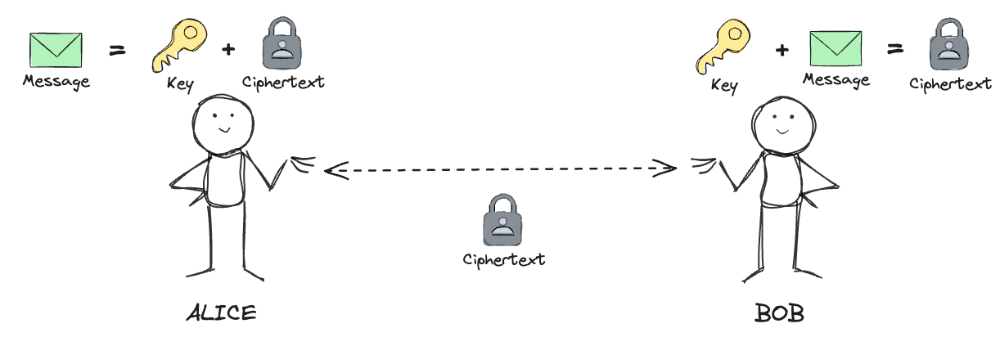
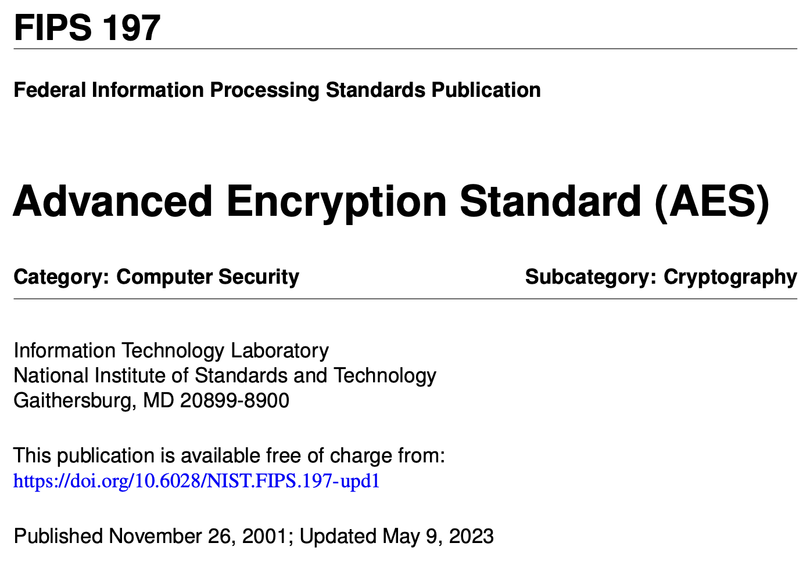
The most popular symmetric algorithm is the Advanced Encryption Standard (AES)
AES with 256 bit key length is approved by NSA for top secret information.
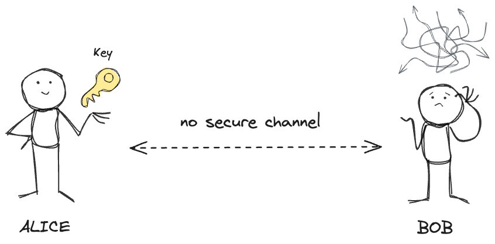
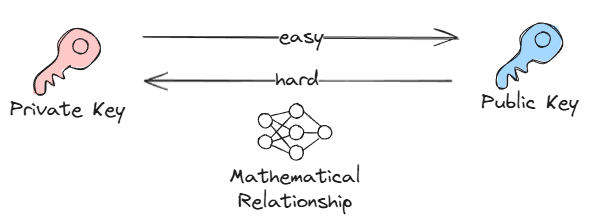
Asymmetric cryptography
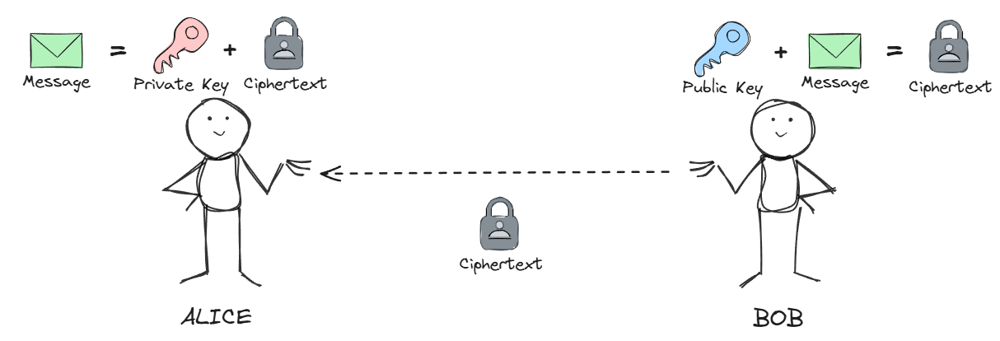
- 🔒
Key exchange/establishment
→ establishing a secure communication channel
→ then hand over to symmetric encryption for efficiency
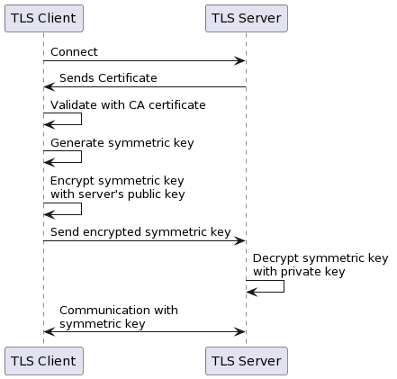
- ✍️
Digital signatures
→ create and verify signatures
→ serve as proof of digital content authenticity and integrity
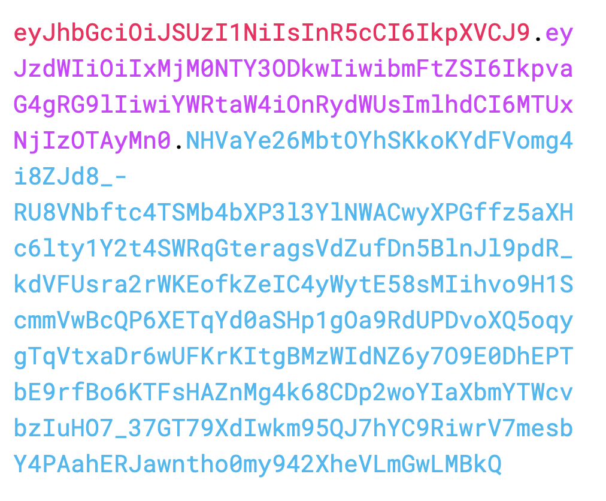
Quantum threats

source: Stefano Markidis, KTH Royal Institute of Technology, https://arxiv.org/abs/2405.07222
Heuristically, and at the risk of over-simplifying, quantum parallelism allows quantum computers to evaluate a function $f(x)$ for many different values of $x$ simultaneously.
One of the most widely used public-private cryptosystems is RSA (Rivest–Shamir–Adleman)
Its security relies on the factoring problem - recovering two large primes from their product.
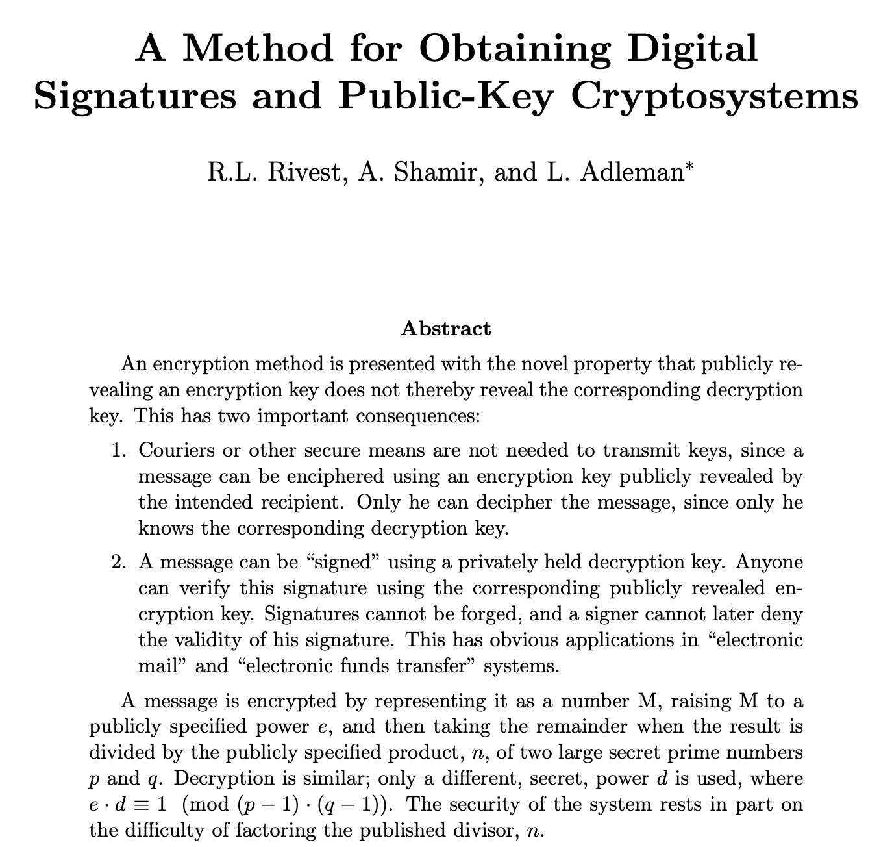
Example: factoring 15
- 1. Set $a = 13$
- 2. Find order $r = 4$
- 3. Calculate:
$p = gcd(170, 15) = 5$
$q = gcd(168, 15) = 3$
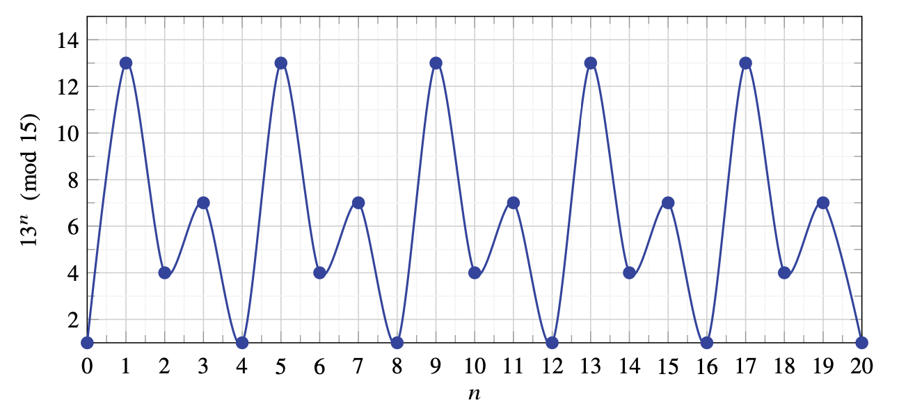
5 and 3 are factors of 15.
Shor's algorithm relies on inverse Quantum Fourier Transform used for function order finding. QFT is exponentially faster than any classical alternative.
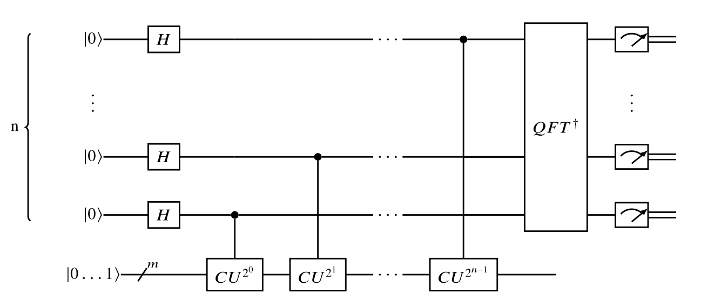
- 🧮 up to 96 logical qubits
→ Harvard/MIT/QuEra (Nov 2025): 448 neutral atoms, with error rates that improved as the system scaled (below threshold) - 🧮 up to 6,100 physical qubits
→ Caltech (Sept 2025): neutral atoms trapped in a laser-driven grid - a qubit array, not yet a full computer - 🧮 ~100 qubits in error-corrected, gate-based machines
→ Google Willow (105), Quantinuum Helios (98 physical → 48 logical), IBM Nighthawk (120)

Because of that it can be used to attack symmetric encryption schemes such as AES, however that can be easily countered by increasing the key size.
Brute force AES 256:
- ⚛️ quantum → $2^{128}$ steps
- 💻 classical → $2^{256}$ steps
Post quantum cryptography
In 2016 NIST (National Institute of Standards and Technology) announced a post-quantum cryptography competition, with the aim to provide a set of standardized crypto schemes resistant to quantum threats.
NIST's transition timeline (IR 8547, Nov 2024 - still a draft)
- ⚠️
2030: 112-bit security deprecated
→ e.g. RSA-2048, ECDSA/ECDH with P-224 - ⛔
2035: all RSA and ECC disallowed
→ every non-quantum-resistant public-key algorithm is out - ⚡
2026: the US made 2030 binding
→ EO 14412 (June 2026): PQ key exchange on federal high-value systems by end of 2030, PQ signatures by end of 2031

IETF standardization is moving from drafts to RFCs:
- 🤝
RFC 10024 (August 2026)
→ Hybrid key exchange for TLS 1.3: X25519MLKEM768, SecP256r1MLKEM768, SecP384r1MLKEM1024 (formerly draft-ietf-tls-ecdhe-mlkem).
→ Standards Track - the default in all major browsers, OpenSSL 3.5+, Apple platforms 26 and (opt-in) Windows Schannel. - 🚀
draft-ietf-tls-mlkem
→ Pure post-quantum key exchange for TLS 1.3.
→ IESG-approved in 2026 (Informational), RFC number pending; not yet widely supported. - 🛠️
draft-ietf-tls-mldsa
→ ML-DSA for authentication (certificates) - together with ML-KEM this gives pure PQC TLS.
→ In IESG review since mid-2026. - 🌳
draft-ietf-plants-merkle-tree-certs
→ Merkle Tree Certificates: shrink post-quantum authentication for the WebPKI.
→ Chrome + Cloudflare live experiment since early 2026; Let's Encrypt targets production in 2027.

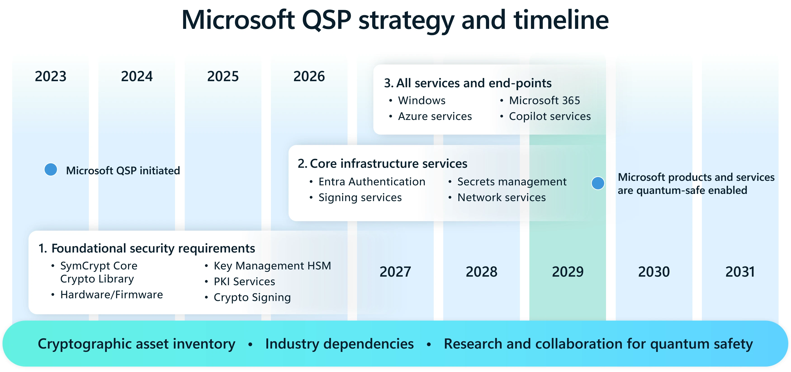
Code!